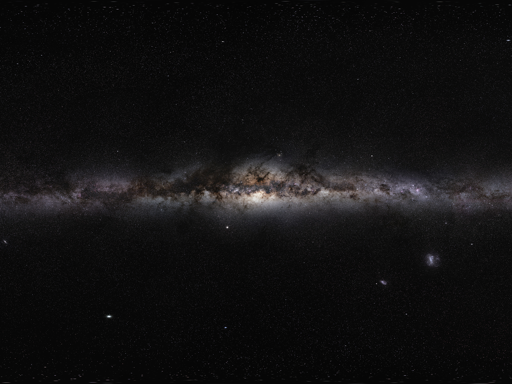
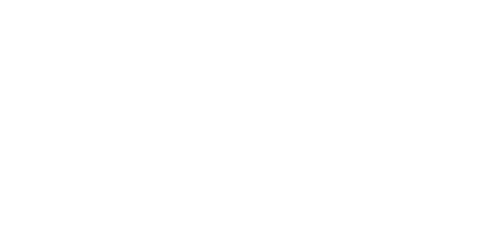
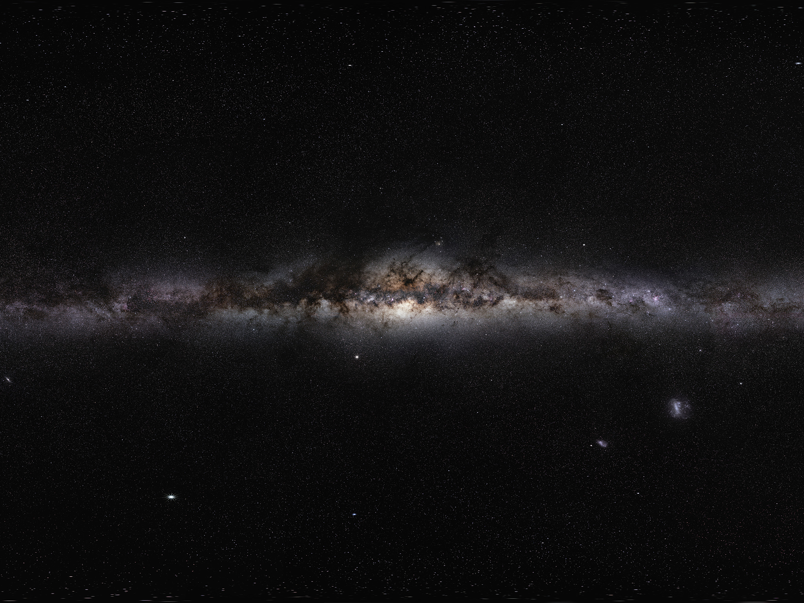
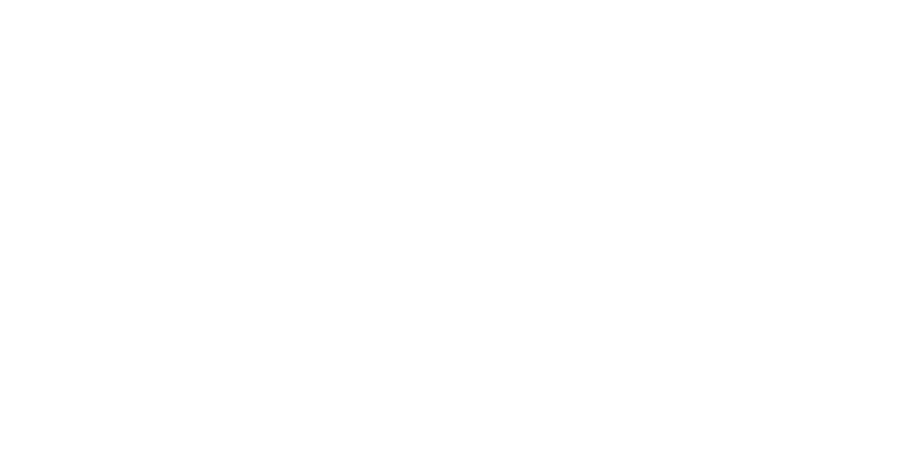
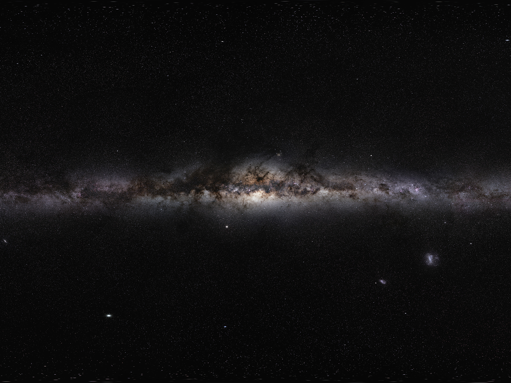
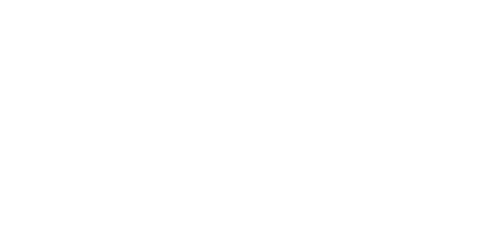

En esta escena se puede apreciar nuestro planeta, con efecto de movimiento de rotación. A un costado, se puede ver un asteroide. Al mover la pantalla, te permite ver desde diferentes ángulos.
Volver
 

 


